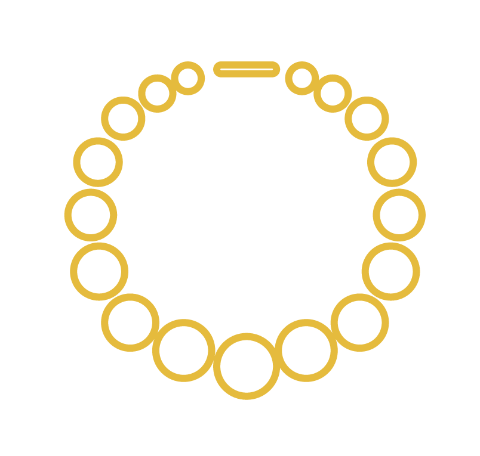

COAT OF ARMS
The coat of arms is a quartered shield, the first and fourth are blue with a silver trident, the second and third are gold with a green pine tree. The crest is a torse with six folds alternating gold and blue, topped with a pansy. Below the shield is a scroll with the Greek translation of our open motto, "Let us steadfastly love one another."
GREEK LETTERS
Using the Greek alphabet, the name Delta Delta Delta is depicted above. The Greek letter for delta is the fourth letter of the Greek alphabet and is commonly seen as an isosceles triangle.
THE PANSY
The pansy is Tri Delta's flower. It is also a symbol of alumnae membership and the third step in the lifetime development of Delta Delta Delta's members.
THE PINE
The tree of Tri Delta is the pine tree. The pine is also a symbol of Tri Delta's collegiate members because it represents growth and lofty aspirations.

THE PEARL
The jewel of Tri Delta is pearl. Because it is the only jewel that grows, developing from a tiny grain of sand into a thing of great value and beauty, it is a symbol of the Fraternity's new members.
THE DOLPHIN
Recognized as a good omen by the ancient Greeks, the dolphin is a symbol of clear skies and smooth sailing. It symbolizes rebirth, friendship and leadership. In Tri Delta, the dolphin has a particular significance for Fraternity leaders.